Microservices
Story and feedback about the technical design of a new product, thanks to microservice architecture
Adeo Dev Summit '18
Alexandre Vandekerkhove
About my team and I
Relationship Inhabitant Program (PRH)
Technical products about inhabitants at Adeo : customers repository, web account, customers management, ...
Alexandre Vandekerkhove
Software engineer since 2006, tech leader in the team. Backend/JEE specialist
Introduction about microservices

small / single responsibility / isolated / loosely-coupled
Theory vs reality

- do we often face such simple use cases?
- how to split a monolith?
Data-quality product pitch
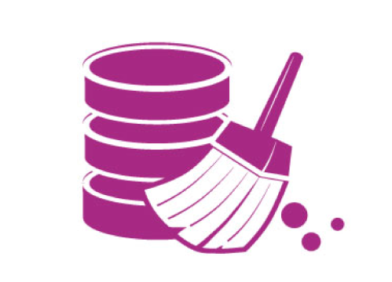- Clean customers data thanks to a proprietary solution to be integrated
- Create new quality measures about customers data
- Expose APIs to manage the batches and the quality measures
What we have to start
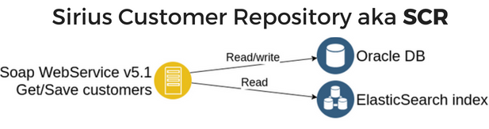1st naive approach
Add new REST endpoints and batches on SCR
2nd naive approach
Chief : "Hey! Let's make microservices, it's cool?!"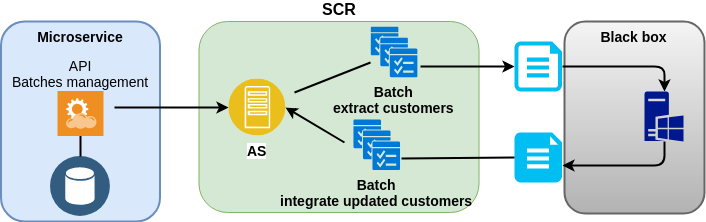
- Bad idea ☹ A lot of modifications on SCR. It should be only a repository.
- SCR is installed in each BU with its own version...
Think before you code...
Try to imagine a solution which answers to :
- SCR is a repository and nothing more
- Possibility to link with other customers sources
- Proprietary software is hidden and can be replaced
- Multi tenant solution : 1 deployment manages multiple B.U.
- Agile concepts : easy to change, easy to deploy
SCR isolation : Anti-corruption layer
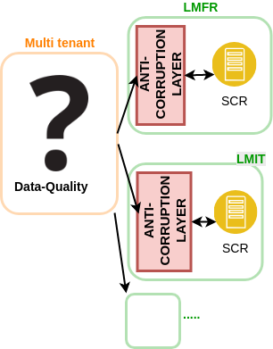
The ACL handles all exchanges with SCR
▸ Another customers source can be used
▸ We can design an own, simple data model : the ACL is responsible of the communication
▸ SCR changes→impacts limited to ACL
Hide the proprietary software
Do one thing and do it well
The worker microservice will be only responsible of dealing with IN/OUT customers files, and communicate with the software
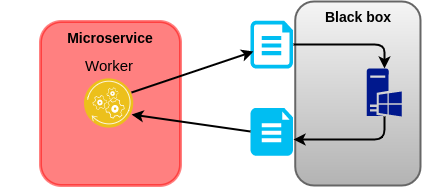Putting it All Together
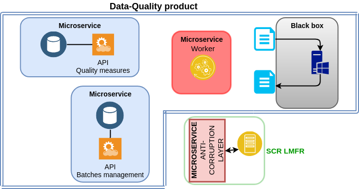Putting it All Together
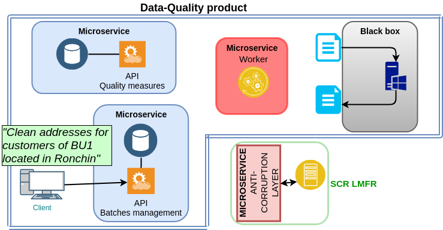Putting it All Together
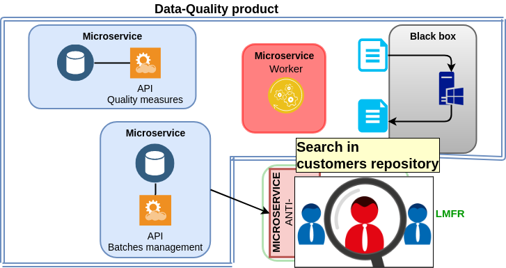Putting it All Together
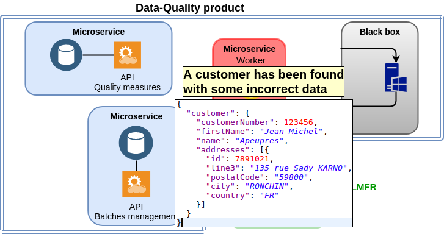Putting it All Together
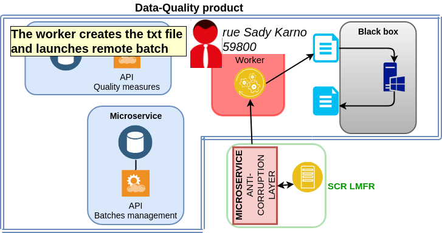Putting it All Together
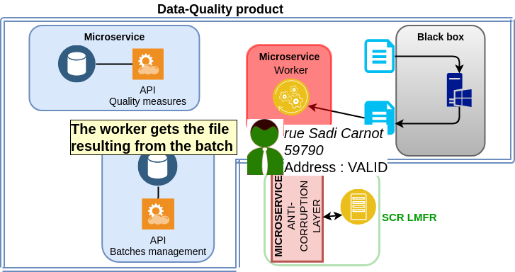Putting it All Together
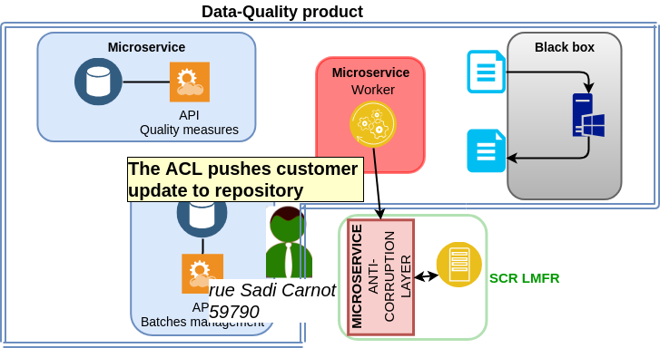Putting it All Together
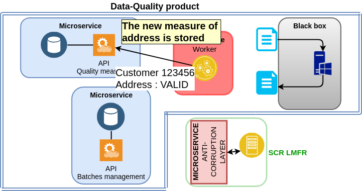Ok but... how to exchange data ?
The components need to communicate
Key concepts :
Loose coupling
Prefer asynchronous processing
Smart endpoints and dumb pipes
→(lightweight) Messaging
Message-driven architecture
- Each component is autonomous and communicates to each other via messages.
- Command - "Hey you, please could you do that?"
Ex. : LaunchBatch - Event - "Hello all, I just did that, do what you want :)"
Ex. : CustomerUpdated
Choregraphy vs Orchestration
Service Choregraphy uses a decentralized approach, with no central point. Each component knows what it has to do.
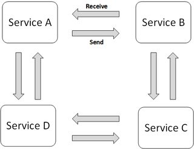Technical stack
Feedback
MVP is in production now!
Implementation costs
Tons of gitlab projects
For each component : packaging, security, containerization
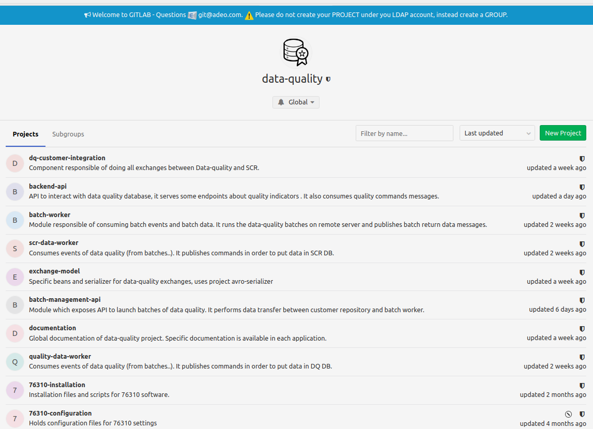Tons of jobs for C.I.
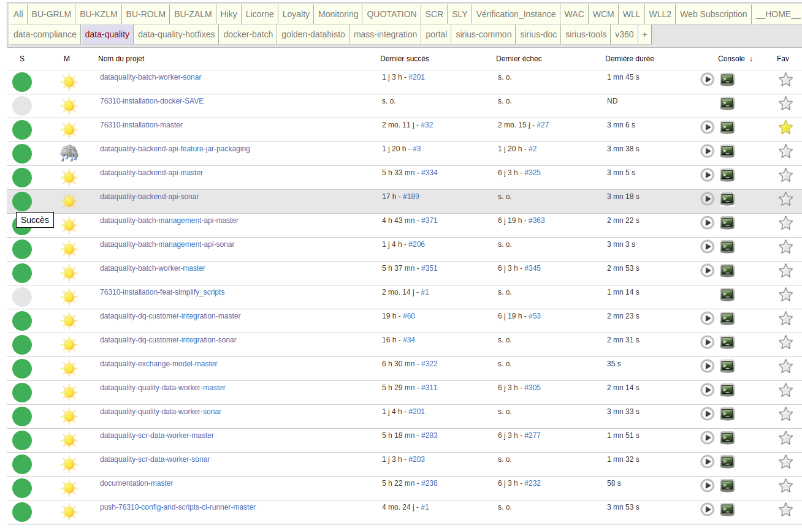Multiple deployment
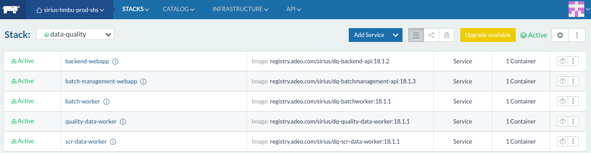This is not really a problem but the monitoring and log analysis are more complex
Don't underestimate these costs!
Very Cool!
- Easier evolutivity
- Low complexity for each software (KISS principle)
- Easy rewriting ; we did it many times!
- Independant scalability
- Improved resilience
- Independant deployments
→ All of this improves a lot our time-to market!
Not so cool
- Low productivity in the beginning
- We have to deal with eventual consistency
- Complex architecture for newcomers
- Source code tracking : a feature may cause changes in many components (which implies multiple commits, pull requests, ...)
Is it worth it ?
Some advice...
Be pragmatic. Don't try to split each piece of code in multiple microservices.
- Document and Version the exchanges between services
- REST : ok... (URI versioning, Swagger, RAML...)
- Messaging : possibility to use tools like Apache Avro, Google Protobuf or Confluence schema registry
- Avoid to share code between microservices
- Don't apply DRY principle
- Follow Open-Closed principle
- Implement lot of tests : unit/integration/end-to-end